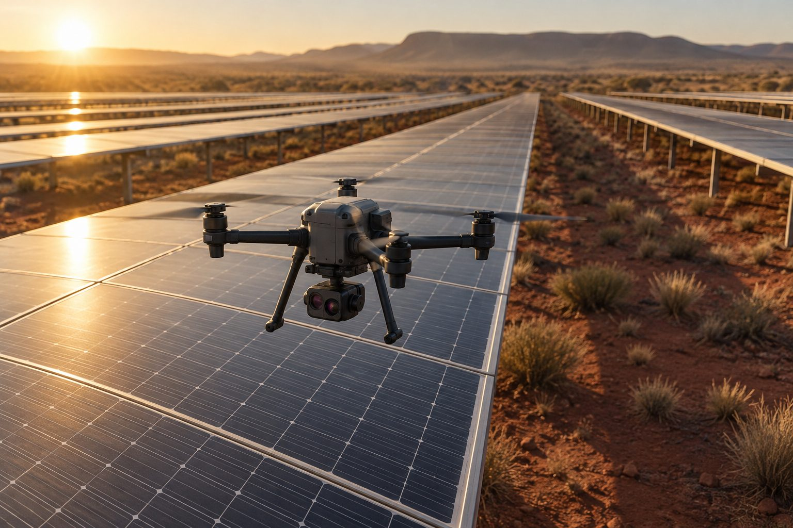

Technologies
Grounded in physics. Accountable to evidence.
Our hybrid digital twin combines physical modelling with real-world observations to track how assets evolve across space and time. It quantifies performance impacts, evaluates intervention scenarios and tests predictions against measured outcomes.
The evidence chain
From material origins to measured outcomes.
A continuous evidence chain connects physical conditions, asset performance and verified results, keeping predictions traceable, testable and open to refinement.
Sensing
From surface anomalies to material evidence.
RGB and thermal surveys locate suspected problems across the array. Targeted robotic terahertz measurements investigate subsurface material and interface conditions that conventional imaging cannot directly assess.


Aerial RGB & thermal screening
RGB identifies soiling, shading and visible damage; thermal imaging reveals abnormal heating. Together, they rapidly locate suspect modules and focus detailed inspection where it is most valuable.
Robotic terahertz diagnostics
Terahertz sensing probes accessible dielectric layers and interfaces, revealing contrasts associated with moisture, material changes and concealed structural irregularities. It adds subsurface evidence beyond optical appearance and surface temperature.
Environmental context
Irradiance, temperature, wind and shading provide the context needed to distinguish environmental effects from persistent anomalies, reducing false alarms and unnecessary inspections.
Condition tracking
Repeated observations and operating data reveal whether anomalies are temporary, persistent or progressing. Follow-up inspections are prioritised by changes in condition and their potential impact.
Decision-making
Where every module is, what it is made of, and how it is behaving
Each module is linked to the place it lives. Over time the database becomes a map of how solar hardware ages across Australia's climate zones, and a guide to what to build where. Explore the regional map.
The database
One record per module
Click any box to see what it holds. Four streams flow in and attach to the same module; two things come out of it.
How we work
From site assessment to verified decisions.
A phased approach that begins with broad-area screening and progresses to targeted diagnostics, physics-informed modelling and economic optimisation. Each step adds evidence where it can improve the next decision.
01 — Screen & establish the baseline
Drone RGB and thermal surveys identify and locate anomalies across the array. Existing SCADA, asset and maintenance records establish operating baselines and guide inspection priorities.
02 — Characterise & diagnose
Site-specific heat, irradiance, moisture, shading and environmental exposure provide context for observed anomalies. Targeted robotic terahertz scans investigate selected modules and reference samples, adding subsurface material evidence where it can inform decisions.
03 — Model & optimise
Multimodal observations feed a physics-informed, multiphysics digital twin linking environmental exposure, material condition and energy performance. Intervention scenarios are evaluated against expected energy recovery, lifecycle cost, risk and uncertainty.
04 — Decide, verify & improve
Prioritise cleaning, reinspection, repair, replacement or deferral based on expected net value. Compare actual costs and measured outcomes with predictions to refine future maintenance, plant design and manufacturing decisions.
- ScreenWhere?
- CharacteriseUnder what conditions?
- DiagnoseWhat is happening?
- ModelWhat is the impact?
- DecideWhat is worth doing?
- VerifyDid it deliver?
Engagement pathwayFocused pilot→Validated value→Scaled deployment